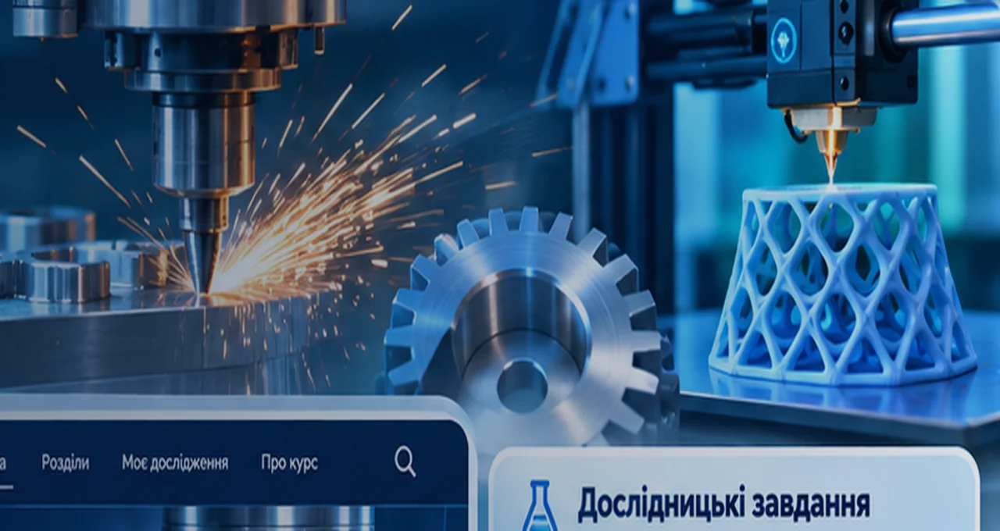
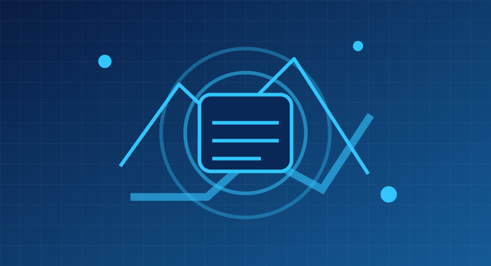
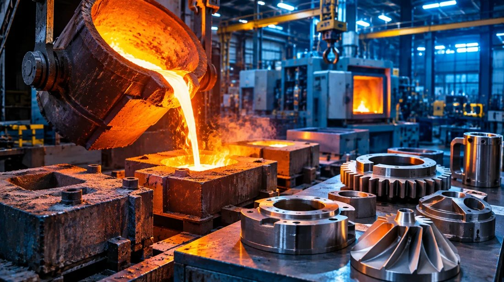
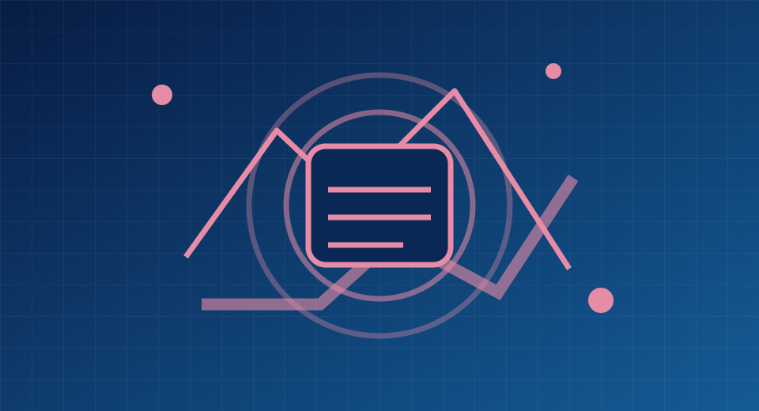
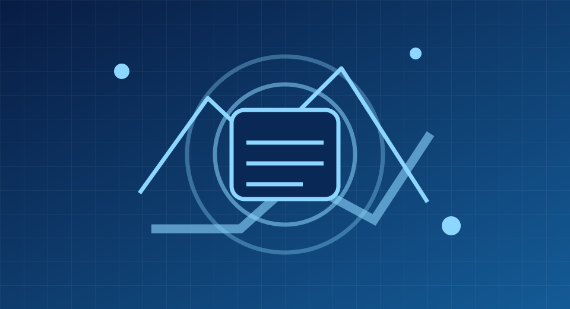
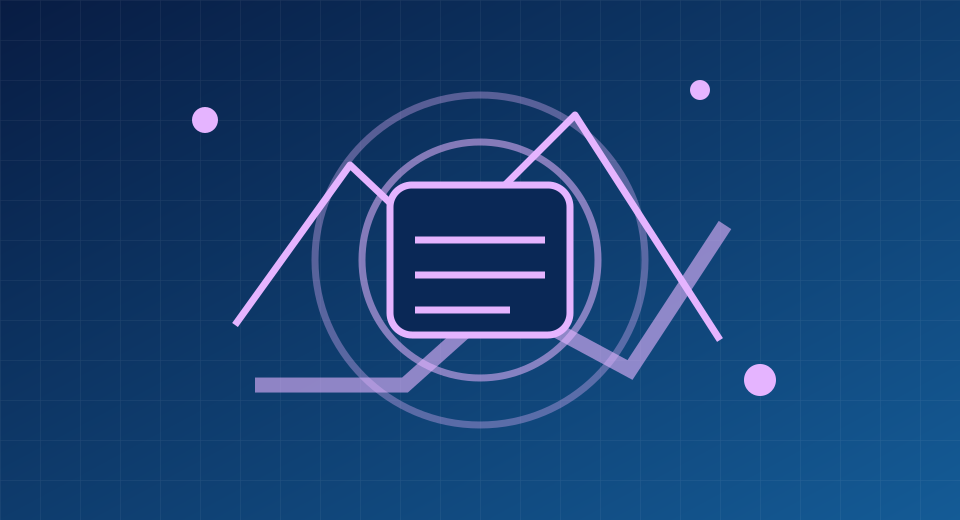
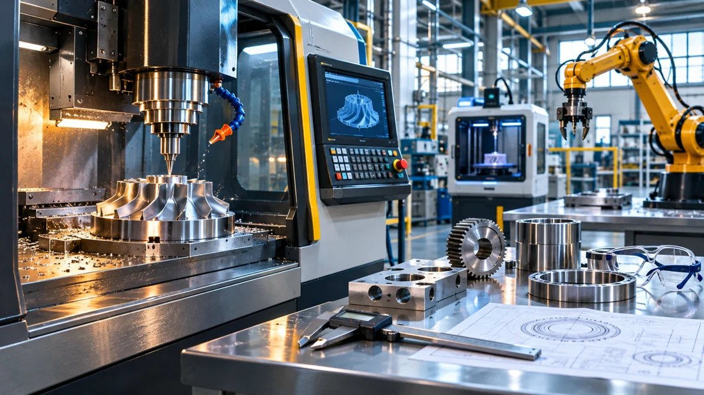

Технології виробництва
Досліджуйте матеріали, 3D-друк, промислові процеси та інженерні рішення. Формулюйте гіпотези, змінюйте параметри, порівнюйте результати й створюйте власне дослідження.
Почати дослідження Моє дослідження МАНрозділів
програмні теми
години програми

Розділи курсу

Основи науково-дослідницької діяльності
3 програмні теми · дослідження та практичні завдання
Відкрити розділ →Технології та їх класифікація. Адитивні технології. Методологія технічної творчості
3 програмні теми · дослідження та практичні завдання
Відкрити розділ →Організація та проведення експериментальних досліджень
3 програмні теми · дослідження та практичні завдання
Відкрити розділ →
Матеріалознавство: структура, властивості та термічна обробка матеріалів
3 програмні теми · дослідження та практичні завдання
Відкрити розділ →
Методи дослідження внутрішньої будови та властивостей матеріалів
2 програмні теми · дослідження та практичні завдання
Відкрити розділ →
Порошкова металургія та композиційні матеріали
2 програмні теми · дослідження та практичні завдання
Відкрити розділ →Технології функціональних покриттів і поверхневого зміцнення матеріалів
2 програмні теми · дослідження та практичні завдання
Відкрити розділ →Променеві та високоенергетичні методи обробки матеріалів
2 програмні теми · дослідження та практичні завдання
Відкрити розділ →
Обробка матеріалів тиском
2 програмні теми · дослідження та практичні завдання
Відкрити розділ →
Узагальнення результатів дослідження та підготовка до конкурсу-захисту
2 програмні теми · дослідження та практичні завдання
Відкрити розділ →